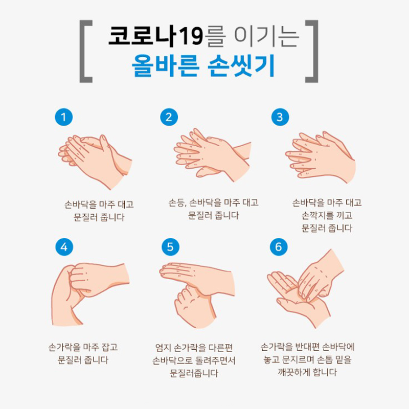

-
손씻기6단계v

-
밀접 접촉자 생활 수칙v
- 감염 전파 방지를 위해 격리장소 바깥 외출금지
- 독립된 공간에서 혼자 생활하기
- 방문 닫은 채로 창문을 열어 자주 환기시키고, 식사는 혼자서 하기
- 가능한 혼자만 사용할 수 있는 화장실과 세면대가 있는 공간 사용하기 *공용 화장실, 세면대를 사용한다면, 사용 후 소독
- 진료 등 외출이 불가피할 경우 반드시 관할 보건소에 먼저 연락하기
- 가족 또는 함께 거주하는 분과 대화 등 접촉하지 않기 *불가피한 경우, 얼굴을 맞대지 않고 서로 마스크를 쓰고 2m이상의 거리를 두기
- 개인용품(개인용 수건, 식기류,휴대전화 등)으로 사용하기
- 의복 및 침구류는 단독세탁 식기류 등은 별도로 분리하여 깨끗이 씻기 전에 다른 사람이 사용하지 않도록 하기
- 건강수칙 지키기 - 비누로 30초이상 흐르는 물에 손 씻기, 기침 등 호흡기증상이 있을 경우 마스크 착용, 마스크가 없으면 소매로 가려 기침하며 기침, 재채기 후 손 씻거나 손 소독 실시하기
-
관련기관 연락처 v
질병관리청 1339